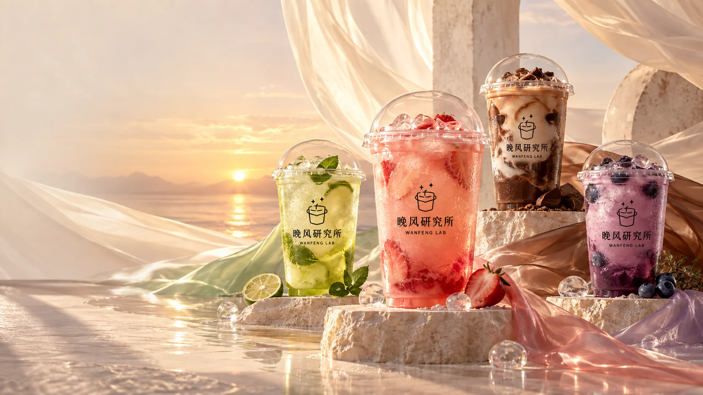
PROJECT 03AI BRAND SYSTEM · 2026
PERSONAL CONCEPT BRAND / 个人概念品牌
晚风研究所WANFENG LAB
把一天的情绪，交给一杯晚风。
- PROJECT
- AI 概念饮品品牌
- ROLE
- 概念策划 / AI 视觉生成
视觉精修 / 动态叙事 - DELIVERABLES
- 4 个产品系列 / 4 张系列海报
包装 · 社媒 · 短片 / 14 页提案
01 / CORE IDEA & VISUAL SYSTEM
把情绪变成
可以被选择的天气。
围绕下班后、独处、雨天与深夜，将抽象情绪转化为清晰的产品结构。四个系列共享同一品牌语言，以风味、色彩与场景建立差异。
情绪
EMOTION× 天气
WEATHER× 饮品
DRINK→ 四套品牌系列
4 PRODUCT WORLDS
EMOTION× 天气
WEATHER× 饮品
DRINK→ 四套品牌系列
4 PRODUCT WORLDS
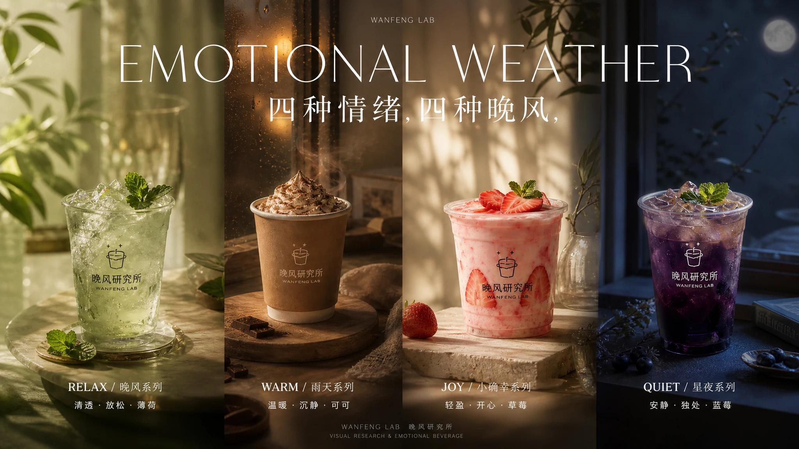
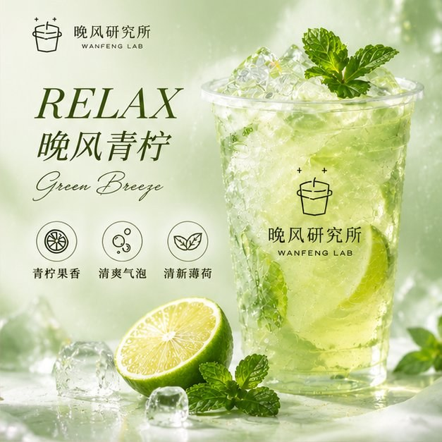
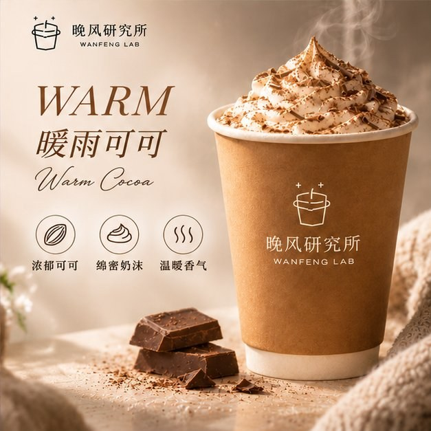
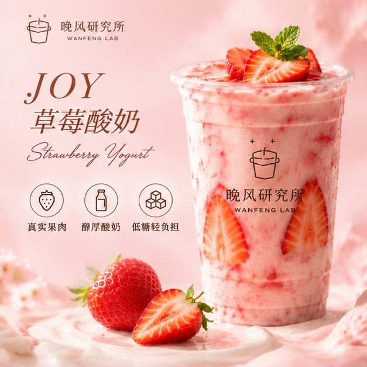
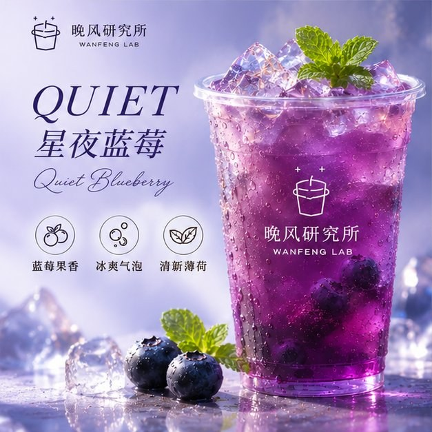
02 / SYSTEM IN USE
一套规则，
落到每个触点。
品牌不是四张海报。它是货架上的一瓶、贴在门口的一块屏、手机里刷到的一格图，和装在纸袋里被带回家的那一刻。
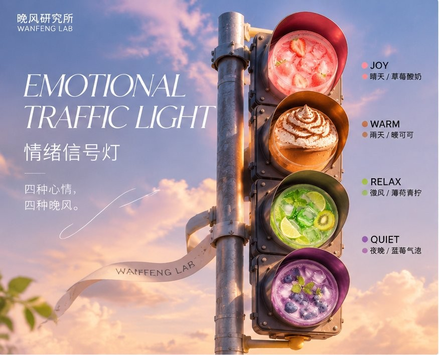
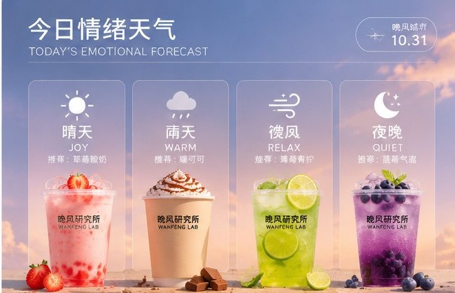
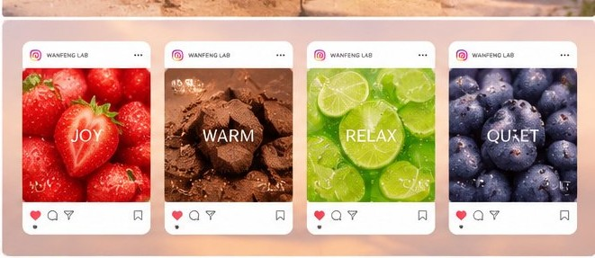
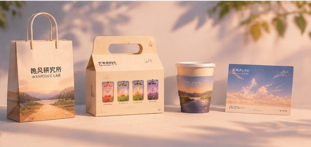
一套图形走完。
系列图形、配色与字体层级从海报直接搬到外带场景——纸袋、提盒、杯托与纸杯、随赠卡片，四件物料共用同一套版式规则。
03 / KEY OUTCOMES
同一个品牌系统，
进入不同媒介。
从静态 Campaign 到约 20 秒的动态影像，让风、光、气泡与液体共同承担叙事。
04 / CREATIVE PROCESS规则约束生成，
规则约束生成，
判断保证一致。
独立完成从概念定义、生成筛选到视觉精修与媒介延展，重点检查产品辨识度、材质表现和系列一致性。
- 01定义
明确产品线、情绪与场景。
- 02生成
约束光线、材质与镜头语言。
- 03筛选与精修
检查构图、标志与产品一致性。
- 04输出
延展至海报、影像与社媒视觉。
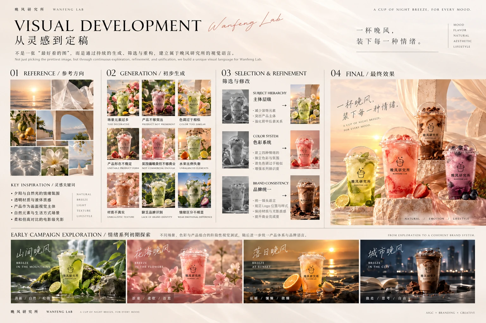
FULL CASE STUDY